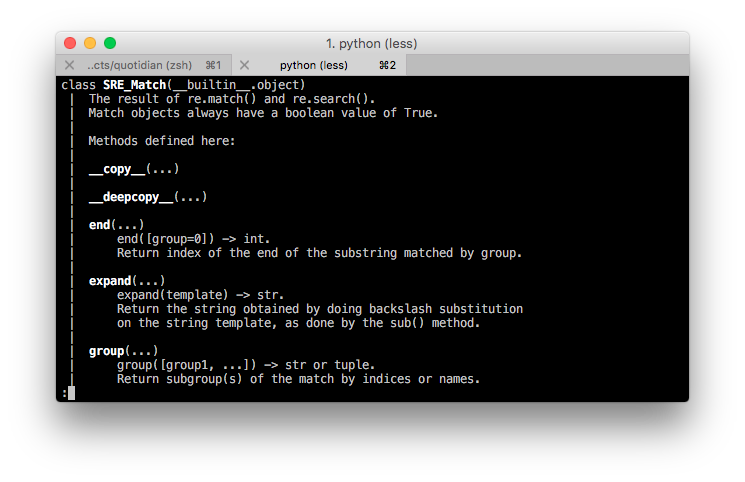

The power went out this morning and left the house in darkness except for my laptop. I took this time to get some work done with my plugin for Pelican but I found myself at a stand still because I wanted to get some information on how regular expressions parse results into a dictionary.
With the internet not working, I decided that I'd try seeing what is available with the REPL in python and I found it to be fairly helpful in the fact that I had access to the documentation in the same interface as the code that I was writing.
In my case, I wanted to find out what methods are part of the match class. Sure, I ran into a minor bump of not knowing how to get help to show me the documentation of match directory, but I quickly got around that by run help on the match object that I created.

Honestly, this gives me a little more confidence in myself that I can find things out on my own without having to turn to the internet and finding myself getting side tracked by all the destractions that someone can find.